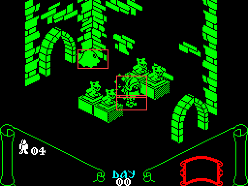
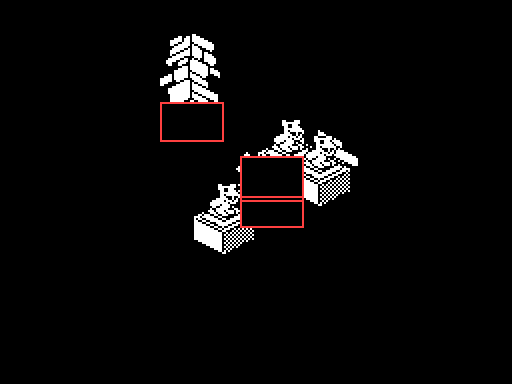
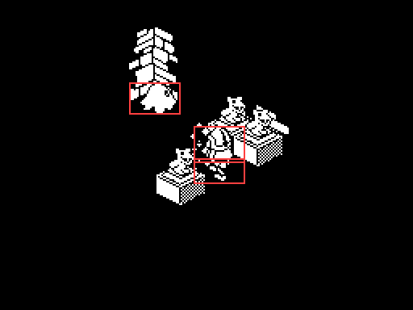
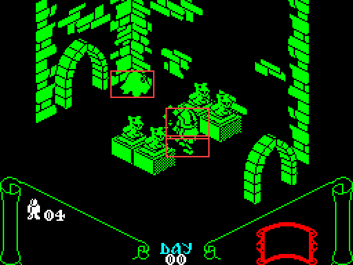

| Knight Lore | How a moving object is drawn |
Knight Lore never redraws the room. Everything on the screen stays as it is until something changes, and then only the rectangle the change covers is rebuilt -- off screen, in depth order -- and copied across. This page follows one moving object through a frame, from its handler moving it to the pixels reaching the display, and then shows a real frame of the game doing it, traced in the game's own code.
Each frame onscreen_loop walks the forty object records. Before an object's handler runs, save_2d_info keeps a copy of where its picture was on the screen (bytes $18-$1B, the width and height and the pixel position, go to $1C-$1F): that is the image that may have to be wiped. The handler is chosen by the object's type, through upd_sprite_jmp_tbl.
An object's velocity is in bytes $09-$0B. Gravity is one DEC of dZ (dec_dZ_and_update_XYZ); adj_for_out_of_bounds then shortens the move against the room's walls and every other object, one axis at a time -- Z, then X, then Y -- a unit at a time, so a blocked move slides along what blocks it; and add_dXYZ adds what is left to the position. An object that animates changes its own type, which is also its sprite: there is no frame number.
A handler whose object moved or changed calls set_wipe_and_draw_flags. That sets two flags in byte $07 -- bit 5, wipe my old picture, and bit 4, draw me -- and calls set_draw_objs_overlapped, which projects the new position (calc_2d_info, through calc_pixel_XY: pixel x = X + Y - 128, pixel y = (Y - X + 128)/2 + Z - 104, counted up from the bottom) and takes the rectangle covering both the old picture and the new one. Every live object whose picture overlaps that rectangle gets bit 4 too: it will have to be drawn again, because the wipe is going to take a bite out of it.
At the end of the frame, list_objects_to_draw lists every object with bit 4, and render_dynamic_objects takes each one with bit 5: it clears the rectangle of its old and new pictures, in whole bytes across and pixel rows up, in the room's buffer at screen_buffer -- never on the screen -- and pushes the rectangle on the stack to copy later.
calc_display_order_and_render then draws every listed object into the buffer, back to front. It picks a candidate, and compares it with each other undrawn object: each axis is classified as clear one way, overlapping, or clear the other way, and the 27 combinations are looked up in the table at depth_order_tbl, which says whether the other one must go first. If it must, it becomes the candidate; when a candidate survives the whole list it is drawn. The projection hides a step of (+1, -1, +1), so further back means smaller X, larger Y and lower Z. Each object is drawn whole by print_sprite, through its own mask -- the background is cleared under the mask and the image laid in -- and turned the way it faces by flipping the sprite's own bytes in place (vflip_sprite_data).
Finally copy_next_rect pops each rectangle and blit_to_screen copies just that part of the buffer to the display. Nothing is erased on the display and nothing is drawn there piece by piece, so nothing flickers; and nothing outside the rectangles changes. The objects were drawn whole into the buffer, but only the rectangles are copied, so what lies outside them in the buffer does not matter -- which is also why marking only the objects that overlap the rectangle is enough: anything else could not put a pixel inside it.
$5BBE counts the frame's work, objects drawn plus rectangles copied, and end_of_frame waits six units less that, so a room with little changing runs at an even speed and a busy one slows down. On entering a room (build_screen_objects) there is no wipe: every object is drawn into a cleared buffer and the whole of it is copied, once.
Frame 3 after entering room $01, run by the game's own code in a simulator when this page was built. The ghost drifts, the guard marks time, and the player is still materialising by the door. 3 objects changed, so there are 3 rectangles, outlined in red; 14 objects are drawn to fill them.

The screen as the frame begins.

The buffer after the wipe: the rectangles are cleared. Around them are leftovers of earlier frames, which are never copied.

The buffer after drawing: every flagged object, drawn whole, back to front.

The screen after the rectangles are copied.
The objects drawn, in the order the depth sort chose:
| Order | Record | Type | What | Why it is drawn |
|---|---|---|---|---|
| 1 | 8 | 13 | a piece of room wall, static | overlaps a change |
| 2 | 9 | 14 | a piece of room wall, static | overlaps a change |
| 3 | 17 | 10 | a piece of room wall, static | overlaps a change |
| 4 | 32 | 83 | ghost, wandering at random; deadly (bit 1 facing, bit 0 flapping) | moved |
| 5 | 22 | 7 | plain block, static; at the end of the game each one left in the room becomes type 131 | overlaps a change |
| 6 | 23 | 7 | plain block, static; at the end of the game each one left in the room becomes type 131 | overlaps a change |
| 7 | 26 | 22 | gargoyle, static and deadly | overlaps a change |
| 8 | 27 | 22 | gargoyle, static and deadly | overlaps a change |
| 9 | 31 | 147 | legs of a guard or the wizard, walking frame 3, first pair of facings | changed picture |
| 10 | 0 | 121 | Sabreman materialising, frame 1 | overlaps a change |
| 11 | 1 | 121 | Sabreman materialising, frame 1 | overlaps a change |
| 12 | 30 | 150 | upper body of the guard that walks back and forth along X, one frame per facing | changed picture |
| 13 | 25 | 7 | plain block, static; at the end of the game each one left in the room becomes type 131 | overlaps a change |
| 14 | 29 | 22 | gargoyle, static and deadly | overlaps a change |
The rectangles copied, in pixels:
| x | y from the top | Width | Height |
|---|---|---|---|
| 80 | 51 | 32 | 20 |
| 120 | 98 | 32 | 16 |
| 120 | 78 | 32 | 23 |